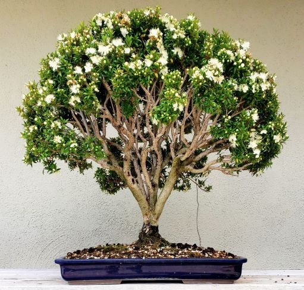

Мирт (лат. Mȳrtus) — род вечнозелёных древесных растений с белыми пушистыми цветками, содержащими эфирные масла, семейства Миртовые (Myrtaceae). Миртом прежде называли также венок из цветущих побегов такого дерева или его ветвь — символ тишины, мира и наслаждения.
К роду Мирт (Myrtus) принадлежит от 16 до 40 видов семейства миртовых (Myrtaceae).
В культуре широко известен один вид — Мирт обыкновенный (Myrtus communis).
Мирт обыкновенный (Myrtus communis L.) — вечнозеленый кустарник высотой 2 м. Листья кожистые, супротивные, на коротких черешках, темно-зелёные. Цветки мелкие, обоеполые, пазушные, одиночные, на тонких цветоножках, белые. Плоды — ягоды округлой или яйцевидной (эллиптической) формы, величиной с горошину, синевато-черной или белой окраски. В каждом плоде образуется до 15 семян.